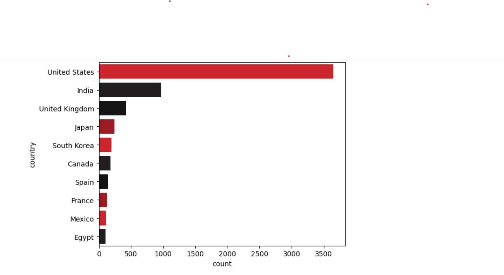

About This Project
Dive deep into the fascinating world of Netflix content with this data analysis project. By leveraging a comprehensive dataset of movies and TV shows available on the platform, we explore key trends, patterns, and insights that shape Netflix's global presence and content strategy.
This analysis covers various aspects including geographical content distribution, release trends, genre popularity, and more, providing a foundational understanding of Netflix's dynamic ecosystem.
Explore the Analysis
 View Interactive Notebook (Google Colab)
View Interactive Notebook (Google Colab)
 Read Project Overview (README)
Read Project Overview (README)
 Download Raw Data (netflix.csv)
Download Raw Data (netflix.csv)
Key Discoveries & Visualizations
Below are some of the pivotal visualizations and insights derived from the data. These charts highlight significant trends and distributions within the Netflix content library. Click on any image to view it in detail.
Global Content Distribution
Understanding which countries are producing or consuming the most Netflix content provides crucial geographical insights.
Seasonal Release Patterns

Analyzing release dates reveals potential seasonal strategies and peak periods for new content drops on the platform.
Content Type Overview

A quick glance at the breakdown between movies and TV shows, or other content types, informing content strategy.
Netflix Brand Visual

A thematic image representing the Netflix brand, enhancing the visual appeal of the project overview.